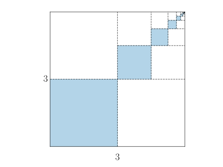
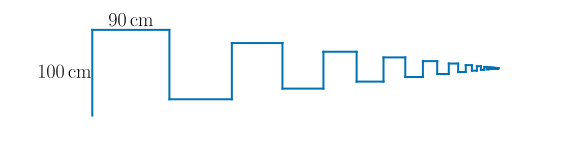
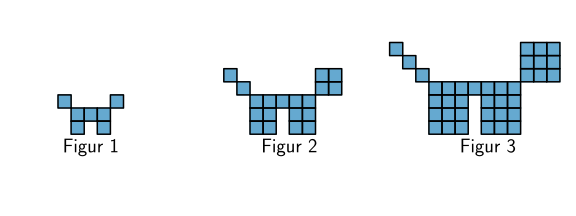

Oppgaver: Programmering av tallfølger#
Oppgave 1
I denne oppgaven skal du lære hvordan man summerer tall med et program.
I programmet nedenfor summeres noen tall med en variabel s i en løkke. Linja s = s + n legger til verdien av n til summen s.
Les programmet og forutsi hvilken verdi som skrives ut av programmet.
Endre på programmet slik at det regner ut summen
Fasit
1s = 0 # variabel som skal lagre summen
2for n in range(1, 101):
3 s = s + n
4
5print(s)
Endre på programmet slik at det regner ut summen
Fasit
1s = 0 # variabel som skal lagre summen
2for n in range(1, 101, 2):
3 s = s + n
4
5print(s)
Endre på programmet slik at det regner ut summen
Fasit
1s = 0 # variabel som skal lagre summen
2for n in range(2, 101, 2):
3 s = s + n
4
5print(s)
Oppgave 2
En sum er gitt ved
Lag et program som skriver ut de første 5 leddene i summen.
Fasit
1for i in range(1, 6, 1):
2 a = 1 / 2**(n + 1)
3 print(a)
Lag et program som regner ut summen av de 5 første leddene i summen
Fasit
1s = 0
2for i in range(1, 6, 1):
3 a = 1 / 2**(n + 1)
4 s = s + a
5
6print(s)
7
Bruk programmet ditt til å bestemme hvilken verdi summen nærmer seg når vi bruker veldig mange ledd.
Fasit
1s = 0
2for i in range(1, 10001, 1):
3 a = 1 / 2**(n + 1)
4 s = s + a
5
6print(s)
7
Oppgave 3
Alma og Synne jobber med summen
Jeg vet hvordan vi kan regne ut summen når alle leddene er positive, men nå er jo leddene positive og negative annen hver gang.
Kan vi ikke bare bruke en if-else-setning sånn at programmet bytter på fortegnet annen hver gang da?
Jo! Er ikke det litt som å bare sjekke om et tall er delelig med \(2\) da?
Det tror jeg vil funke!
Ta utgangspunkt i ideen til Alma og Synne, og lag et program som skriver ut de 5 første leddene i summen.
Lag et program som regner ut summen av de 5 første leddene.
Bruk programmet ditt til å bestemme hvilken verdi programmet nærmer seg når vi bruker veldig mange ledd.
Oppgave 4
Nedenfor ser du tre figurer. Figurene er satt sammen av små kvadrater.
Tenk deg at du skal fortsette å lage figurer etter samme mønster. Vi lar \(K_n\) være antall små kvadrater i figur \(n\).

Bestem en formel for \(K_n\).
Fasit
Lag et program som regner ut og skriver ut hvor mange små kvadrater det er i hver av de \(10\) første figurene.
Du starter med å lage figur \(1\), så figur \(2\), deretter figur \(3\), og så videre.
Lag et program som finner ut hvor mange kvadrater du må bruke for å lage de 10 000 første figurene.
Oppgave 5
Nedenfor ser du tre figurer. Figurene er satt sammen av små kvadrater.
Tenk deg at du skal fortsette å lage figurer etter samme mønster. Vi lar \(K_n\) være antall små kvadrater i figur \(n\).

Bestem en formel for \(K_n\).
Fasit
Lag et program som beregner og skriver ut hvor mange små kvadrater det er i hver av de \(20\) første figurene.
Tenk deg at du har 1 000 000 små kvadrater. Du starter med å lage figur \(1\), så figur \(2\), deretter figur \(3\), og så videre.
Lag et program som finner ut
Hvor mange figurer du kan lage
Hvor mange små kvadrater du har igjen
Oppgave 6
I denne oppgaven skal du jobbe med summer av oddetall og partall.
Vi lar \(S_n\) være summen av de \(n\) første oddetallene slik at
Lag et program som skriver ut de \(20\) første oddetallene. Bruk formelen for oddetallene gitt ved
Fasit
1for n in range(1, 21):
2 oddetall = 2 * n - 1
3
4 print(oddetall)
Lag et program som skriver ut \(S_1, S_2, S_3, \ldots, S_{20}\).
Fasit
1s = 0
2for n in range(1, 21):
3 oddetall = 2 * n - 1
4 s = s + oddetall
5
6 print(s)
La \(P_n\) være summen av de \(n\) første partallene.
Lag et program som skriver ut \(P_1, P_2, P_3, \ldots, P_{20}\).
Fasit
1p = 0
2for n in range(1, 21):
3 partall = 2 * n
4 p = p + partall
5
6 print(p)
Oppgave 7
Anna og Nicolai jobber med å lage et program som regner ut \(n\)-fakultet definert med formelen:
For eksempel er
Når vi regner ut summer, så setter vi en variabel s = 0 på starten av programmet, og så legger vi til leddene ved å skrive s = s + ledd.
Ja, kanskje vi bare kan bytte ut plusstegnet med et gangetegn da?
Men hvis s er 0 i starten, så blir jo svaret alltid 0?
Ja, men vi startet med 0 fordi å plusse på 0 endrer ikke summen. Hvilket tall er det som ikke endrer verdien til et produkt?
Ta utgangspunkt i dialogen mellom Anna og Nicolai og lag et program som regner ut \(5!\).
Fasit
1s = 1
2for n in range(1, 6):
3 s = s * n
4
5print(s)
Antall måter å stokke en kortstokk på er \(52!\)
Bruk programmet ditt til å regne ut \(52!\).
Kan du forklare hvorfor det sannsynligvis stemmer at når man stokker en kortstokk, så er det nesten umulig å få samme rekkefølge som en annen gang?
Fasit
1s = 1
2for n in range(1, 53):
3 s = s * n
4
5print(s)
som gir utskriften
80658175170943878571660636856403766975289505440883277824000000000000
Oppgave 8
Nedenfor vises et kvadrat med sidelengder \(3\).
Kvadratet er fylt med mindre fargelagte kvadrater som blir mindre og mindre.
{kind=link}

Lag et program som skriver ut arealet til de \(10\) største fargelagte kvadratene i figuren.
Fasit
1s = 3
2for n in range(1, 11):
3 s = s / 2
4
5 print(s**2)
Lag et program som skriver regner ut summen av arealene til de \(100\) største fargelagte kvadratene i figuren.
Fasit
1areal = 0
2s = 3
3for n in range(1, 101):
4 s = s / 2
5 areal = areal + s**2
6
7
8print(areal)
Oppgave 9
Nedenfor vises en figur som er satt sammen av uendelige mange linjestykker.
Lengden til et linjestykke er alltid \(90 \%\) av lengden til det forrige linjestykket. Det første linjestykket er \(100\) cm langt.
{kind=link}

Lag et program som skriver ut lengden til de \(10\) første linjestykkene i figuren.
Fasit
1l = 100
2for n in range(1, 11):
3 print(l)
4
5 l = 0.9 * l
Lag et program som regner ut summen av lengdene til de \(100\) første linjestykkene i figuren.
Fasit
1s = 0
2l = 100
3for n in range(1, 101):
4 s = s + l
5 l = 0.9 * l
6
7print(s)
Lag et program som finner hvor mange linjestykker du må sette sammen for at figuren skal være minst \(9\) meter.
Oppgave 10
Nedenfor vises tre figurer som følger et bestemt mønster.
La \(K_n\) være antall små kvadrater i figur \(n\).
{kind=link}

Bestem en formel for \(K_n\).
Lag et program som skriver ut \(K_1\), \(K_2\), \(K_3\), \(\ldots\), \(K_{20}\).
Lag et program som regner ut hvor mange små kvadrater du må bruke for å lage de 20 første figurene.
Oppgave 11
Å regne ut \(\pi\) med så mange desimaler som mulig har vært et mål for matematikere i over tusen år. En måte å komme fram til verdien til \(\pi\) på er med summen
Jo flere ledd man bruker, jo nærmere kommer man verdien til \(\pi\).
Lag et program som skriver ut de \(5\) første leddene i summen.
Du bør få disse verdiene i utskriften:
4.0
-1.3333333333333333
0.8
-0.5714285714285714
0.4444444444444444
Fasit
1pi = 0
2
3for n in range(1, 6):
4 if n % 2 == 0: # Hvis n er delelig med 2. Ledd 2, 4, 6, osv.
5 ledd = -4 / (2 * n - 1)
6 else: # n er ikke delelig med 2. Ledd 1, 3, 5, osv.
7 ledd = 4 / (2 * n - 1)
8 print(ledd)
Lag et program som summerer de \(5\) første leddene i tallfølgen.
Fasit
1pi = 0
2
3for n in range(1, 6):
4 if n % 2 == 0: # Hvis n er delelig med 2. Ledd 2, 4, 6, osv.
5 ledd = -4 / (2 * n - 1)
6 else: # n er ikke delelig med 2. Ledd 1, 3, 5, osv.
7 ledd = 4 / (2 * n - 1)
8
9 pi = pi + ledd # Legger til leddet i summen
10
11print(pi)
Bestem en god tilnærming til \(\pi\) med programmet ditt fra b.
Hvor mange ledd trenger du for å få \(\pi\) med \(5\) riktige desimaler?
Oppgave 12
Summen av en annen tallfølge nærmer seg også \(\pi\), men mye raskere enn den forrige. Summen er
Lag et program som skriver ut de \(5\) første leddene i summen.
Du bør få utskriften:
3
0.16666666666666666
-0.03333333333333333
0.011904761904761904
-0.005555555555555556
Fasit
1pi = 3
2print(pi)
3
4for i in range(1, 5):
5 nevner = (2 * i) * (2 * i + 1) * (2 * i + 2)
6 if i % 2 == 0:
7 ledd = -4 / nevner
8 else:
9 ledd = 4 / nevner
10
11 print(ledd)
Lag et program som regner ut en tilnærming til \(\pi\) ved å bruke de 10 000 først leddene i summen.
Fasit
1pi = 3
2for i in range(1, 10_000):
3 nevner = (2 * i) * (2 * i + 1) * (2 * i + 2)
4 if i % 2 == 0:
5 ledd = -4 / nevner
6 else:
7 ledd = 4 / nevner
8
9
10 pi = pi + ledd
11
12
13print(pi)
som gir utskriften
3.1415926535900383
Oppgave 13
En rask måte å komme fram til sifrene til \(\pi\) er ved ta utgangspunkt i kjedebrøken nedenfor:
Regn ut en tilnærming til \(\pi\) ved å bruke \(3\) ledd i kjedebrøken:
Lag en algoritme du kan bruke til å skrive et program som regner ut verdien til \(\pi\) ved å bruke \(n\) ledd i kjedebrøken.
Lag et program med utgangspunkt i algoritmen din fra b og regn ut en tilnærming til \(\pi\).
Fasit
1N = 100 # Antall ledd i kjedebrøken
2nevner = 2 * N - 1 # først nevner
3
4for n in range(N - 1, 0, -1): # Starter med det siste leddet
5 nevner = 2 * n - 1 + n**2 / nevner # neste nevner
6
7pi = 4 / nevner
8
9print(pi)